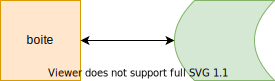

Template - Fiche de synthèse¶
Ce document présente les consignes pour la rédaction de la fiche de synthèse (FS), à rendre avant le jour de l’examen écrit.
Consignes¶
- Votre FS doit être rédigée avec le format
Markdownet suivre le modèle présenté ci-dessous. Elle ne doit pas dépasser l’équivalent d’une dizaine de pages. - Le contenu de la FS doit être géré entre vous, avec l’aide d’un projet GitHub. Le projet sera hébergé sur le compte de l’un des membres du groupe, qui autorisera l’accès en écriture au projet à tous les autres membres du projet ainsi qu’à moi-même (mon pseudo GitHub : SDerrode).
- Le groupe doit se déclarer sur ce fichier partagé, qui contient autant d’obglet qu’il y a de groupes. On y déposera le titre de la fiche, l’adresse URL du projet GitHub et les noms et pseudo des étudiants. Utilisez le premier onglet vide disponible (si nécessaire, ajoutez des onglets).
- Je récupérerai votre FS directement sur votre projet GitHub le jour de l’examen. Le jour de l’examen constitue donc la date butoir pour terminer votre FS.
Remarque Le système de gestion de versions git est présenté en cours. Vous trouverez le scenario du tuto joué durant le second cours dans le répertoire tuto-git-gitlab de ce projet GitHub.
Markdown¶
-
Markdownest un simple format texte dans lequel on ajoute des balises, pour mettre en gras, inclure des images, faire des liens hypertextes… Ces balises peuvent être interprétées par différents moteurs pour obtenir un rendu en html, en pdf, en rtf ou en word… Pour apprendre les quelques balises nécessaires à une mise en page minimaliste (mais suffisante la plupart du temps), vous trouverez de nombreux tutoriaux sur internet, dont celui-ci : Markdown - Wikipédia. -
La totalité des éditeurs de textes généralistes, tels Sublime Text, Geany…, gèrent très bien ce format, et incluent des convertisseurs automatiques. Remarquez d’ailleurs que GitHub interprètent automatiquement les fichiers
Markdownque vous déposez sur leur site. -
Voici cependant quelques outils open source spécifiques qui pourraient vous aider pour débuter:
- ghostwriter : Linux et Windows
- abricotine : Linux, Windows et Mac OS X (en version beta)
- remarkable : Windows et Linux
Il existe des éditeurs en ligne, dont Dilinger, StackEdit (ce dernier requiert une inscription).
Organisation de la FS¶
La FS sera composée de plusieurs fichiers Markdown. Le fichier principal de votre FS sera appelé README.md, et inclura des liens vers les différents fichiers qui composent votre fiche.
Votre fichier README.md sera organisé de la manière suivante :
- le titre de votre FS, les noms des auteurs, l’année (les informations classiques d’une page de garde).
- un résumé d’une dizaine de lignes.
- le sommaire de votre document.
- des liens vers des fichiers
Markdownqui développent votre sujet d’étude (Introduction, chapitre 1, chapitre 2, …, Conclusion). - un lien vers un fichier
Markdownqui contiendra la bibliographie et la webographie. - des liens vers des fichiers
Markdownqui présentent d’éventuelles annexes.
Ajouts d’images, de schémas ou de diagrammes¶
Si vous souhaitez intégrer des diagrammes ou des schéma (ou tout autre diagramme vectoriel), je vous conseille l’utilisation de diagram.net (open source).
Vous pouvez sauvegarder vos graphiques diagram.net sur votre machine (cf exemple dans le dossier figures, à côté de ce fichier) et les convertir dans des images aux formats png, svg… pour les intégrer ensuite dans Markdown selon l’exemple suivant :
la commande  donne
la commande  donne
